전자캐드기능사 (2016-07-10 기출문제)
1과목: 전기전자공학(대략구분)
1. 위상천이(이상형) 발진회로의 발진주파수는? (단, R1=R2=R3=R이고, C1=C2=C3=C이다.)
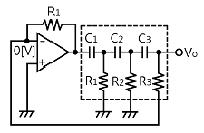
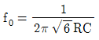
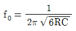
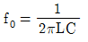
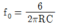
(정답률: 72%)
2. 오실로스코프에 연결하여 파형을 측정하였을 때 측정파형이 다음 그림과 같았다. 최고점간(Peak to Peak) 전압(Vp-p)은 몇 [V]인가? (단, 프로브는 10:1을 사용하였다)
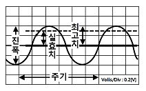
- 0.2
- 0.4
- 4
- 8
(정답률: 69%)

3. 정현파(사인파) 발진회로가 아닌 것은?
- RC 발진회로
- LC 발진회로
- 수정 발진회로
- 블로킹 발진회로
(정답률: 70%)
4. 주파수 안정도가 가장 높은 발진회로는?
- 수정 발진회로
- 클랩 발진회로
- 하틀리 발진회로
- 콜피츠 발진회로
(정답률: 77%)
5. 정류기의 평활회로는 어떤 종류의 여파기에 속하는가?
- 대역 통과 여파기
- 고역 통과 여파기
- 저역 통과 여파기
- 대역 소거 여파기
(정답률: 74%)
6. 동조회로에서 최대 이득을 얻기 위한 조건으로 옳은 것은? (단, 코일의 결합계수 k, 선택도 Q이다)
- k ＜ 1/Q
- k = 1/Q
- k ＞ 1/Q
- k = Q
(정답률: 66%)
7. 빛의 변화로 전류 또는 전압을 얻을 수 없는 것은?
- 광전 다이오드
- 광전 트랜지스터
- 황화카드뮴(CdS) 셀
- 태양전지
(정답률: 78%)
8. 다음 회로의 입력(Vi)에 구형파를 가하면 출력파형 (Vo)은?
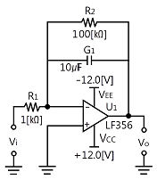
- 정현파
- 구형파
- 삼각파
- 사다리꼴파
(정답률: 73%)
9. 다음 회로에 입력 Vi 파형으로 펄스폭이 At[sec]인 구형파를 가할 때 출력 Vo파형은? (단, 회로의 시정수 RC는 입력파형의 펄스폭보다 훨씬 크다고 가정한다)
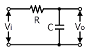
- 정현파
- 구형파
- 계단파
- 삼각파
(정답률: 63%)
10. LC 발진회로에서 귀환회로에 3소자의 연결 형태에 따라 발진회로를 구분할 수 있다. 다음 발진회로의 발진 조건은? (단. 항상 Z1, Z2, Z3 소자는 부호가 같다고 가정한다.)
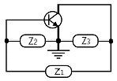
- Z1 : 용량성, Z2 : 용량성, Z3 : 유도성
- Z1 : 용량성, Z2 : 유도성, Z3 : 용량성
- Z1 : 유도성, Z2 : 용량성, Z3 : 용량성
- Z1 : 유도성, Z2 : 용량성, Z3 : 유도성
(정답률: 73%)
11. 다음 회로에 대한 설명으로 틀린 것은?
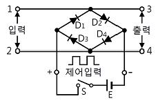
- 회로는 브리지형 게이트 회로이다.
- 스위치 S에 무관하게 입력한 전압이 그대로 출력측의 전압으로 나타난다.
- 스위치 S를 닫으면 D1~D4가 '도통되므로 단자 1~2에 가해지는 전압은 출력단자에 나타나지 않는다.
- 스위치 S가 개방되면 단자 3~4 사이의 다이오드 임피던스는 높으므로 입력 전압은 출력에 그대로 나타난다.
(정답률: 58%)
12. 저항 5[Ω], 용량성 리액턴스 4[Ω]이 병렬로 접속된 회로의 임피던스는 약 몇 [Ω]인가?
- 0.32
- 0.67
- 1.4
- 3.12
(정답률: 57%)
13. 다음 연산 증폭기의 전압 증폭도 Av는?
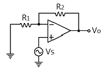
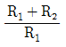
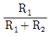
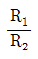
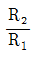
(정답률: 64%)
14. 7세그먼트로 표시장치(Seven-segment Display)의 용도로 적합한 것은?
- 10진수 표시
- 신호 전송
- 레벨 이동
- 잡음 방지
(정답률: 76%)
15. JK 플립플롭을 이용한 동기식 카운터회로에서 어떻게 동작하는가?
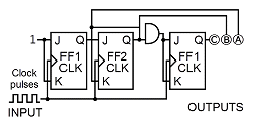
- 10진 증가(Down) 카운터
- 3비트 Mod-8 카운터
- 16진 감소(Down) 카운터
- 10비트 Mod-8 카운터
(정답률: 67%)
2과목: 전자계산기일반(대략구분)
16. 하나의 집적회로(IC; Integrated Circuits) 속에 들어 있는 집적 소자의 개수가 10개 이하 범위에 속하는 집적회로는?
- VLSI
- SSI
- LSI
- MSI
(정답률: 74%)
17. 순서도 사용에 대한 설명 중 틀린 것은?
- 프로그램 코딩의 직접적인 기초 자료가 된다.
- 오류 발생 시 그 원인을 찾아 수정하기 쉽다.
- 프로그램의 내용과 일 처리 순서를 파악하기 쉽다.
- 프로그램 언어마다 다르게 표현되므로 공통적으로 사용할 수 없다.
(정답률: 78%)
18. 주소지정방식 중 명령어의 피연산자 부분에 데이터의 값을 저장하는 주소지정방식은?
- 즉시 주소지정방식
- 절대 주소지정방식
- 상대 주소지정방식
- 간접 주소지정방식
(정답률: 54%)
19. 메모리부터 읽어낸 데이터나 기억장치에 쓸 데이터를 임시 보관하는 레지스터는?
- 인덱스 레지스터
- 메모리 어드레스 레지스터
- 메모리 버퍼 레지스터
- 범용 레지스터
(정답률: 65%)
20. 컴퓨터에서 2[KB]의 크기를 byte 단위로 표현하면?
- 512[byte]
- 1,024[byte]
- 2,048[byte]
- 4,096[byte]
(정답률: 79%)
21. 자료전송에 발생하는 에러(Error) 검출을 위하여 추가된 bit는?
- 3 -초과
- Gray
- Parity
- Error
(정답률: 67%)
22. 산술 및 논리연산의 결과를 일시적으로 기억하는 레지스터는?
- 기억 레지스터(Storage Register)
- 누산기(Accumulator)
- 인덱스 레지스터(Index Register)
- 명령 레지스터(Instruction Register)
(정답률: 72%)
23. 2진수 (1010)2의 1의 보수는?
- 0101
- 1010
- 1011
- 1101
(정답률: 77%)
24. 다음 그림과 같이 두 개의 게이트를 상호 접속할 때 결과로 얻어지는 논리게이트는?
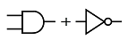
- OR
- NOT
- NAND
- NOR
(정답률: 80%)
25. 다음 중 고급 언어로 작성된 프로그램을 한꺼번에 번역하여 목적프로그램을 생성하는 프로그램은?
- 어셈블리어
- 컴파일러
- 인터프리터
- 로더
(정답률: 71%)
26. 주기억장치(RAM)와 중앙처리장치(CPU)의 속도 차이를 해소하기 위한 기억장치의 명칭은?
- 가상기억장치
- 캐시 기억장치
- 자기코어 기억장치
- 하드디스크 기억장치
(정답률: 76%)
27. 중앙처리장치(CPU)의 구성 요소에 해당하지 않는 것은?
- 연산장치
- 입력장치
- 제어장치
- 레지스터
(정답률: 63%)
28. 다음 중 선입선출(FIFO) 동작을 하는 것은?
- RAM
- ROM
- STACK
- QUEUE
(정답률: 60%)
29. 다음 중 노트북 컴퓨터에 주로 사용되는 디스플레이장치로서, 현재는 데스크톱 형태의 컴퓨터, 전자계산기, 액정 TV 등에 폭넓게 사용되는 장치는?
- 음극선관(CRT)
- 박막액정디스플레이(LCD)
- 플라즈마디스플레이(PDP)
- 디지타이저
(정답률: 70%)
30. 다음 기호의 명칭으로 옳은 것은?
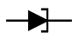
- 정류 다이오드
- 제너 다이오드
- 쇼트키 다이오드
- 터널 다이오드
(정답률: 74%)
3과목: 전자제도(CAD) 이론(대략구분)
31. 두 개의 입력값이 모두 참일 때 출력값이 참이 되는 논리 게이트는 어느 것인가?
- AND
- NAND
- XOR
- NOT
(정답률: 78%)
32. 다음 중 능동 소자 부품의 기호는?
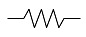
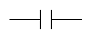
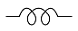
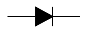
(정답률: 72%)
33. 도면의 크기와 양식에 대한 설명으로 틀린 것은?
- 제도 용지의 크기는 필요에 따라 크기를 선택하여야 한다.
- 종이의 규격에 맞추어야 한다.
- 어떠한 경우라도 종이의 규격에 따라야 한다.
- 양식은 KSA0106 규격 에 따라 도면을 그려야 한다.
(정답률: 71%)
34. 산업 규모가 커지고 제품의 대량 생산화와 더불어 원활한 산업활동과 국가 간의 교류 및 공동의 이익을 얻기 위하여 표준규격을 제정하고 있다. 이와 같이 표준규격을 제정함으로써 나타나는 특징이 아닌 것은?
- 제품의 균일화가 이루어진다.
- 생산의 능률화가 이루어진다.
- 제품의 세계화가 어려워진다.
- 제품 상호 간의 호환성이 좋아진다.
(정답률: 79%)
35. 한쪽 측면에만 리드(Lead)가 있는 패키지 소자는?
- SIP(Single Inline Package)
- DIP(Dual Inline Package)
- SOP(Small Outline Package)
- TQFP(Then Quad Flat Package)
(정답률: 71%)
36. 두 도체로 된 전극 또는 금속편 사이에 각종 유전 물질을 채운 전자 소자의 명칭은?
- 코일
- 커패시터
- 저항
- 다이오드
(정답률: 68%)
37. 반도체 부품의 패키지 형태로 볼 수 없는 것은?
- SIP
- DIP
- SOP
- TOP
(정답률: 61%)
38. 국가별 산업표준규격을 나타내는 표준약호(Code)로 틀린 것은?
- 한국 : KS
- 일본 : JIS
- 미국 : USA
- 독일 : DIN
(정답률: 75%)
39. IPC(Institute for Interconnecting & Packaging Electronic Circuits)에서는 검사기준에 차등을 두기 위해 전자제품을 4등급으로 분류하는데 그 분류가 잘못된 것은?
- CLASS 1 - 군수산업용
- CLASS 2 - 일반산업용
- CLASS 3 - 고성능산업용
- CLASS 4 - 고신뢰등급
(정답률: 62%)
40. 정격의 특성을 색으로 표시할 때 보라색으로 표시하는 숫자는?
- 1
- 3
- 5
- 7
(정답률: 78%)
41. 마일러 콘덴서 104[K]의 용량값은 얼마인가?
- 0.01[μF], ±10[%]
- 0.1[μF], ±10[%]
- 1[μF], ±10[%]
- 10[μF], ±10[%]
(정답률: 64%)
42. 컴퓨터 지원 설계의 약자로 옳은 것은?
- CAD
- CAM
- CAE
- CNC
(정답률: 79%)
43. 설계자의 의도를 작업자에게 정확히 전달시켜 요구하는 물품을 만들게 하기 위해 사용되는 도면은?
- 계획도
- 주문도
- 견적도
- 제작도
(정답률: 57%)
44. 컴퓨터에 그림이나 도형의 위치 관계를 부호화하여 입력하는 장치로서 평면판과 펜으로 구성되어 있는 장치는?
- 키보드
- 마우스
- 디지타이저
- 스캐너
(정답률: 76%)
45. PCB 도면을 그래픽 출력장치로 인쇄할 경우 프린트 기판에 부품 정보를 나타내는 도면은?
- Solder Mask
- Top Silk Screen
- Solder Side Pattern
- Component Side Pattern
(정답률: 62%)
46. CAD 시스템을 도입하는 목적으로 틀린 것은?
- 복잡한 명령과 실행
- 도면 작성의 자동화
- 작업 시간의 단축
- 효율적 관리
(정답률: 71%)
47. 인쇄회로 기판 설계 시 전원선의 도체의 너비를 구하는 기준으로 옳은 것은?(오류 신고가 접수된 문제입니다. 반드시 정답과 해설을 확인하시기 바랍니다.)
- W = 0.008 / 전압
- W = 0.0⑤ / 전압
- W = 0.08 × 전압
- W = 0.⑤ × 전압
(정답률: 46%)
48. 레이저 빔 프린터와 같은 고속 프린터의 속도를 표시할 때 사용하는 단위는?'
- CPS
- LPM
- PPM
- BPS
(정답률: 58%)
49. 저항값이 낮은 저항기로 대전력용으로 사용되며 표준 저항기 등의 고정밀 저항기로 사용되는 저항으로 옳은 것은?
- 탄소피막 저항
- 솔리드 저항
- 금속피막 저항
- 권선 저항
(정답률: 58%)
50. 리드(Lead)가 없는 반도체 칩을 범프(Bump, 돌기)를 사용하여 PCB 기판에 직접 실장하는 방법을 말하는 것은?
- 표면실장기술(SMT)
- 삽입실장기술(TMT)
- 플립칩(FC; Flip Chip) 실장
- POB(Package On Board) 기술
(정답률: 48%)
51. PCB 설계 시 사용되는 단위에 관한 것이다. ( ) 안에 알맞은 숫자는?
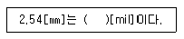
- 1
- 10
- 100
- 1,000
(정답률: 64%)
52. 전자 CAD로 작업한 파일을 저장할 수 있는 장치는?
- 스캐너
- 모니터
- 마우스
- 하드디스크
(정답률: 81%)
53. 다음의 내용에서 설명하는 명령어는?
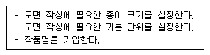
- 도면 열기
- 도면 저장하기
- 화면 크기 조정
- 새 도면
(정답률: 68%)
54. 다음은 양면 PCB 제조공정의 주요 단계를 순서 없이 늘어놓은 것이다. 제조공정의 순서로 올바른 것은?
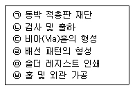
- ㉠→㉣→㉢→㉤→㉥→㉡
- ㉠→㉢→㉣→㉤→㉥→㉡
- ㉠→㉤→㉣→㉢→㉥→㉡
- ㉠→㉤→㉢→㉣→㉥→㉡
(정답률: 58%)
55. PCB 설계 시 배선의 전기적 특성과 노이즈 개선방법을 틀린 것은?
- 회로블록마다 디커플링 커패시터를 배치한다.
- 기판 내 접지점은 5점 이상의 접지방식을 사용한다.
- 양면에서는 각층이 서로 교차되도록 배선한다.
- 주파수 대역 형태별로 기판을 나누어서 배선한다.
(정답률: 49%)
56. CAD용 소프트웨어의 구성이라고 볼 수 없는 것은?
- 그래픽 패키지
- 응용 프로그램
- 응용 데이터베이스
- MGA(Mono-chrome Graphic Adapter)
(정답률: 61%)
57. 기판 재료 용어를 설명한 것 중 표면에 도체 패턴을 형성할 수 있는 절연 재료를 의미하는 것은?
- 절연 기판(Base Material)
- 프리프레그(Prepreg)
- 본딩 시트(Bonding Sheet)
- 동박 적충판(Copper Clad Laminates)
(정답률: 64%)
58. PCB 제작 시 필름의 치수변화를 최소화하기 위한 조치로서 바르지 못한 것은?
- 필름실의 항온·항습 유지
- 수축을 방지하기 위해 구입 즉시 시용
- 이물질을 최소화하기 위한 Class 유지 관리
- 제조 룸과 공정의 통제 관리
(정답률: 66%)
59. CAD로 직선을 그리는 경우 좌표 원점으로부터 거리를 나타내며 (X, Y)로 표시하는 것은?
- 극좌표
- 절대좌표
- 상대좌표
- 복소평면좌표
(정답률: 59%)
60. 패턴 설계 시 고려해야 할 상황이 아닌 것은?
- 신호 전달 패턴과 전력 전달 패턴은 근접시키지 않는다.
- 패턴은 가능한 최단 거리를 원칙으로 한다.
- 패턴의 굵기는 흐르는 전류량과 관련이 있다.
- 패턴과 패턴 사이는 가능한 GND 패턴을 통과 시키지 않는다.
(정답률: 59%)